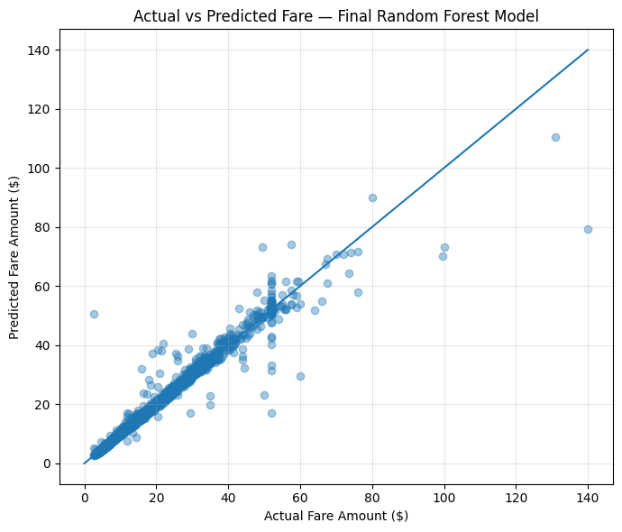
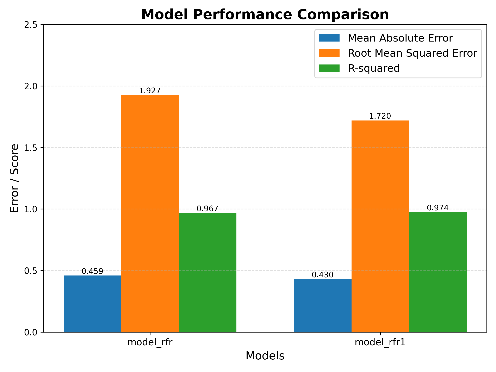

Project Overview
NYC taxi passengers lack fare transparency before starting a ride. Fare variability driven by distance, duration, traffic, and data anomalies creates uncertainty for riders and operational challenges for pricing systems.
Data
- NYC Taxi & Limousine Commission historical trip records.
- Features: distance, duration, passenger count, payment type, tolls.
- Major issues: unrealistic fares, zero‑distance trips, anomalies.
Modeling & Statistical Validation
Random Forest Regression was selected to capture non‑linear pricing patterns after linear models failed variance and residual diagnostics.
Approach
- Exploratory Data Analysis to validate pricing behavior.
- Anomaly detection using fare‑per‑mile and duration logic.
- Feature engineering for model stability.
- OLS regression used only as diagnostic validation.
Model Performance
- R²: 0.974
- MAE: 0.43
- RMSE: 1.71


Interactive Power BI Analytics
Power BI was used for deep-dive analysis, error diagnostics, decomposition trees, tooltips, and executive insights.


Tableau – Model Validation
Tableau was used to validate the model on the testing dataset using Actual vs Predicted trends, Distribution checks, and Error variance.


Key Insights
- Data quality directly determines model reliability.
- Non‑linear models better reflect real-world pricing.
- Long-distance trips (20+ miles) contribute the highest errors.
- High-fare rides show more prediction variance.
- Duration & distance heavily influence fare uncertainty.
- Credit card payments dominate and include almost all tipping behavior.
Business Recommendations
- Promote Credit Card payments to increase tipping and driver earnings.
- Implement anomaly detection (QC rules) for fares, distance & duration.
- Introduce upfront-pricing for 20+ mile trips to reduce uncertainty.
- Strengthen peak-hour operations (Morning & Evening).
- Target Medium Fare riders (20–60) for loyalty and repeat campaigns.